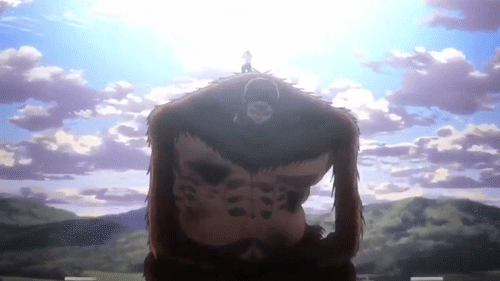

El Titán Bestia, también conocido como Zeke Jaeger, es un personaje importante en la serie "Shingeki no Kyojin" (Attack on Titan).
Tiene la habilidad de transformarse en un titán simiesco de gran tamaño, lo que le confiere una fuerza y habilidades excepcionales en combate.
Zeke es un estratega brillante y un antagonista complejo, ya que su objetivo principal es liberar al mundo de los titanes, aunque sus métodos y creencias
lo llevan a tomar decisiones drásticas y controvertidas. A lo largo de la serie, se revela que tiene una relación estrecha con Eren Jaeger, el protagonista,
y que sus motivaciones están profundamente arraigadas en su trágica historia personal y en su visión del futuro de la humanidad.
